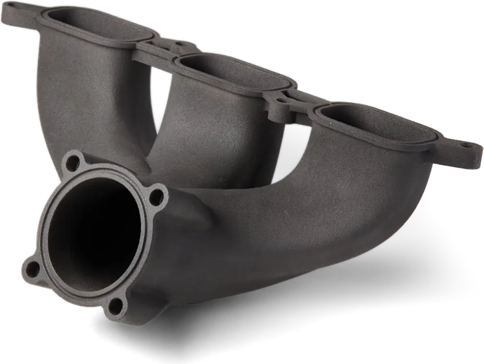

Impression SLS
- Dimensions imprimable : 150×150×180mm
- Possibilité matière : Pa11, Pa12, TPU, PAGF, PACF
- Prototypage industriel
- Tolérances : +-0.05mm
Un parc d'une dizaine de machines pro (FDM, SLS, résine) et 21 matériaux qualifiés, du PLA à l'Ultem industriel. O&D Impression 3D, Liège.

Supermaker SLS1518 : impression SLS industrielle compacte, volume 150×150×180 mm, PA11, PA12, TPU, CF, GF, recyclage poudre intégré. O&D, Liège.
Ouvrir la fiche →
Supermaker SLS3540 Pro : impression SLS industrielle grand format, volume 350×350×430 mm, PA11, PA12, TPU, CF, GF, recyclage poudre intégré. O&D, Lièg
Ouvrir la fiche →
La Bambu Lab H2C imprime en FDM jusqu'à 24 couleurs, idéale pour vos pièces multicolores et multi-matériaux. Disponible chez O&D Impression 3D à Liège
Ouvrir la fiche →
Bambu Lab X1C : impression FDM haute vitesse, volume 256×256×256 mm, idéale pour la production en série et le prototypage rapide. O&D Impression 3D, L
Ouvrir la fiche →
Impression 3D de très grande taille avec la Modix Big Meter. Pièces XXL et multi-matériaux disponibles chez O&D Impression 3D à Liège, Belgique.
Ouvrir la fiche →
Prusa Core One : imprimante FDM industrielle compatible ASA, ABS, PC et PA, pour vos prototypes et petites productions. Chez O&D Impression 3D à Liège
Ouvrir la fiche →
Impression 3D haute température avec l'INTAMSYS Funmat HT : PEEK, PEKK, Ultem, PPSU, PC, PA pour l'industrie, l'aérospatial et le médical. O&D, Liège.
Ouvrir la fiche →
Impression résine ultra-précise avec l'Anycubic Photon Mono M7 Max : volume 298×300×164 mm, recyclage automatique de la résine. Chez O&D à Liège.
Ouvrir la fiche →Machine · 09Découvrez la CNC de bureau ToolDance X1 : zone de travail 400 × 265 × 180 mm, broche 1,5 kW, changement automatique de 9 outils et modules 4 ou 5 axes
Ouvrir la fiche →
Gravure laser à 4000mm/s sur +300 matériaux avec la xTool F1. Personnalisation bois, métal, cuir, verre. Disponible chez O&D Impression 3D à Liège, Be
Ouvrir la fiche →
Le scanner 3DeVOK MT capture vos objets à 0,04 mm de précision et 4,5 millions de points/s. Rétro-ingénierie, contrôle qualité, prothétique. O&D, Lièg
Ouvrir la fiche →
Le PA11 Rilsan est un nylon biosourcé très résistant aux chocs et à la fatigue, offrant flexibilité et durabilité pour des pièces mécaniques exigeante
Ouvrir la fiche →
Production en série de pièces SLS en Nylon PA12 : excellente répétabilité et résistance mécanique élevée. Votre partenaire à Welkenraedt (Liège).
Ouvrir la fiche →
Impression 3D SLS en Nylon PA12 gris : pièces fonctionnelles résistantes, stables et post-traitables. La référence SLS pour l'industrie, à Welkenraedt
Ouvrir la fiche →
Impression 3D SLS en Ultrasint® PA11 : nylon biosourcé, plus souple que le PA12 et biocompatible, idéal pour le médical et les pièces flexibles. O&D,
Ouvrir la fiche →
Pièces SLS rigides et légères en PA11 renforcé fibre de carbone : idéal pour structures aéronautiques, drones et robotique. O&D Impression 3D, Liège.
Ouvrir la fiche →
PA12 renforcé billes de verre par frittage laser SLS : rigidité et stabilité dimensionnelle supérieures au PA12 standard. O&D Impression 3D, Liège.
Ouvrir la fiche →
Impression 3D SLS en PA11 ESD antistatique : protection des composants électroniques sensibles, adaptée aux environnements ESD stricts. O&D, Liège.
Ouvrir la fiche →
Impression 3D SLS en PA2210 FR retardateur de flamme : certifié aéronautique et défense, conforme aux normes incendie les plus strictes. O&D, Liège.
Ouvrir la fiche →
Pièces SLS en PA12 grade alimentaire bleu certifié FDA/CE : détectable en ligne de production, résistant aux désinfectants. O&D Impression 3D, Liège.
Ouvrir la fiche →
Pièces flexibles en TPU 88A par frittage laser SLS : joints, semelles et protections sur mesure, sans structure de support. O&D Impression 3D, Liège.
Ouvrir la fiche →
Impression 3D PLA de haute qualité chez O&D Impression 3D à Liège, Belgique. Idéal pour le prototypage détaillé, les maquettes et les objets décoratif
Ouvrir la fiche →
Le PETG combine la facilité du PLA et la résistance de l'ABS : pièces fonctionnelles, durables et polyvalentes. Impression 3D PETG chez O&D à Liège.
Ouvrir la fiche →
Impression 3D TPU pour pièces flexibles, élastiques et résistantes. Joints, coques, semelles. Disponible chez O&D Impression 3D à Welkenraedt, Liège,
Ouvrir la fiche →
Impression 3D ABS pour pièces fonctionnelles résistantes à la chaleur et aux chocs. Disponible chez O&D Impression 3D à Liège, Belgique.
Ouvrir la fiche →
L'ASA est le matériau idéal pour les pièces d'extérieur : résistance aux UV, aux intempéries et à la chaleur. Impression 3D ASA chez O&D à Liège, Belg
Ouvrir la fiche →
PA12-CF : nylon renforcé fibre de carbone pour pièces rigides, légères et à haute résistance thermique. Disponible chez O&D Impression 3D à Liège, Bel
Ouvrir la fiche →
PA12-GF : nylon renforcé fibre de verre, stable et robuste pour vos applications industrielles. Impression 3D chez O&D Impression 3D à Liège, Belgique
Ouvrir la fiche →
Le polypropylène (PP) est idéal pour les contenants chimiques, charnières et pièces légères. Impression 3D PP chez O&D Impression 3D à Liège, Belgique
Ouvrir la fiche →
Le PPS-CF résiste jusqu'à 240 °C et aux produits chimiques les plus agressifs. Impression 3D PPS-CF chez O&D Impression 3D à Liège, Belgique.
Ouvrir la fiche →
Impression 3D PEEK : résistance mécanique et chimique de haut niveau, usage aérospatial et médical. Disponible chez O&D Impression 3D à Liège, Belgiqu
Ouvrir la fiche →
Le PEKK surpasse le PEEK en rigidité, avec moins de retrait à l'impression. Pièces techniques haute performance chez O&D Impression 3D à Liège, Belgiq
Ouvrir la fiche →
L'Ultem (PEI) est homologué FAA pour l'aéronautique : résistant aux flammes et aux hautes températures. Impression 3D Ultem chez O&D à Liège, Belgique
Ouvrir la fiche →❌ Limites
❌ Limites
❌ Limites
✅ Avantages
❌ Limites
✅ Avantages
❌ Limites
✅ Avantages
❌ Limites
✅ Avantages
❌ Limites
✅ Avantages
❌ Limites
✅ Avantages
❌ Limites
✅ Avantages
❌ Limites
NOS MACHINES FDM
❌ Limites
❌ Limites
❌ Limites
❌ Limites
❌ Limites
❌ Limites
Léger, flexible et résistant aux produits chimiques.
✅ Avantages
Performance extrême pour environnements sévères..
✅ Avantages
NOS MACHINES COMPLEMENTAIRES
Comprendre en 30 secondes quelle technologie utiliser
STEP 1
Le choix entre FFF et SLS dépend principalement du niveau de complexité, de résistance et de budget attendu.
STEP 2 FFF
cube
✔ Rapide, économique, idéal prototypes et pièces fonctionnelles
✔ Coût de production faible
✔ Grand choix de matériaux
✔ Impression rapide
✔ Grandes pièces possibles
✖ Strates visibles
✖ Résistance variable
✖ Moins adapté aux formes complexes
STEP 3 SLS
gear
✔ Pièces techniques, solides et géométries complexes
✔ Haute résistance mécanique
✔ Aucune structure de support
✔ Géométries complexes possibles
✔ Finition homogène
✖ Coût plus élevé
✖ Usage industriel
✖ Délais plus longs
CONCLUSION
Conclusion simple :
FFF
= économique & rapide
SLS
= technique & performance
Envoyez votre fichier 3D ou décrivez votre besoin : devis instantané avec fichier, devis personnalisé sous 24 h.